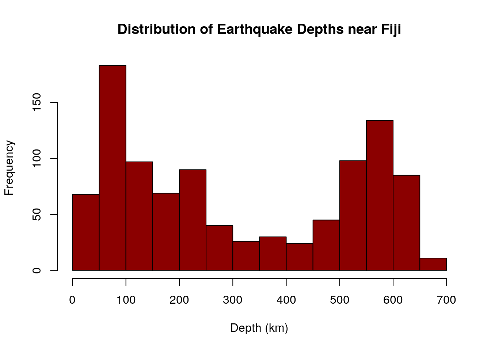

December 10, 2020

Python and R: Let's Close the Gap!
While both Python and R are really useful languages on their own, sometimes they work best together.
WOAH! Two programming languages at once?
I know...sounds crazy but hear me out!
In certain situations, it may be more convenient and easier to visualize and analyze data through using the "reticulate" function so that Python and R can communicate with one another. This allows objects in a different programming language to called upon as needed. It sounds challenging at first, but it's actually quite straightforward!
We'll start of with a simple example!
#R Code Chuck
# "reticulate" is activated in R
library(reticulate)
# the object seasons is defined
seasons <- "There are four seasons."#Python Code Chuck
seasons = "I think summer is my favorite season!"
# r. allows Python to access R-defined objects
print(r.seasons,seasons) ## There are four seasons. I think summer is my favorite season!We can also do the opposite and access Python defined objects in R!
# py. allows R to access Python-defined objects
cat(c(seasons,py$seasons))## There are four seasons. I think summer is my favorite season!Let's Do Some Modeling!
The dataset "quakes" displays 1000 occurences of earthquakes near Fiji.
import pandas as pd
quakes = pd.read_csv("https://vincentarelbundock.github.io/Rdatasets/csv/datasets/quakes.csv",index_col=0)
# displays first five rows
quakes.head()## lat long depth mag stations
## 1 -20.42 181.62 562 4.8 41
## 2 -20.62 181.03 650 4.2 15
## 3 -26.00 184.10 42 5.4 43
## 4 -17.97 181.66 626 4.1 19
## 5 -20.42 181.96 649 4.0 11Now let's model that data in R! The code below will generate a histogram displaying the frequency of different depths of earthquakes near Fiji!
# generates histogram of the "depth" variable from the quakes dataset
hist(py$quakes$depth, xlab = "Depth (km)", main = "Distribution of Earthquake Depths near Fiji", right = F, col = " dark red")
Based on the histogram, we can observe a biomodal distribution!